Remove compromise
Every part must justify its weight, position and purpose under pressure.
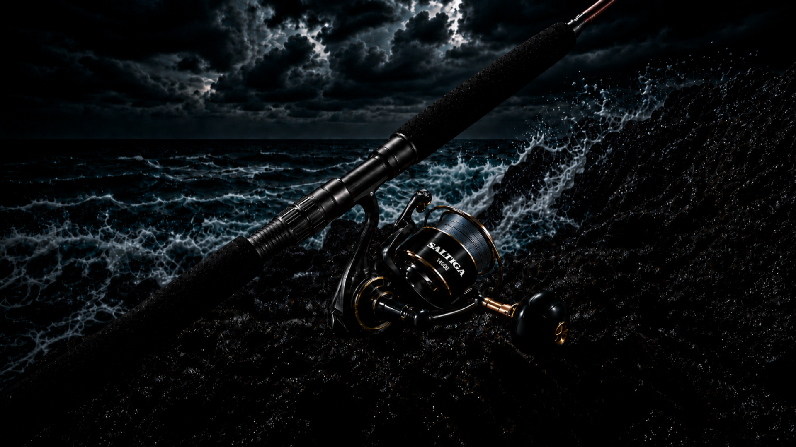
KAIZURO ASSAULT · PE6-8
A new offshore casting rod created for anglers who refuse to accept the usual compromises.
Why KAIZURO Exists
Heavy offshore casting rods are often defined by compromise. Strength adds weight. Power can diminish recovery. Heavy components can reduce balance, feel and control.
KAIZURO began by questioning those accepted trade-offs. Not to produce another offshore rod with a different logo, but to create the rod we believed should already exist.
KAIZURO means over-engineered on purpose.Every material, component, dimension and construction decision must justify its place. Nothing is accepted simply because it is conventional.
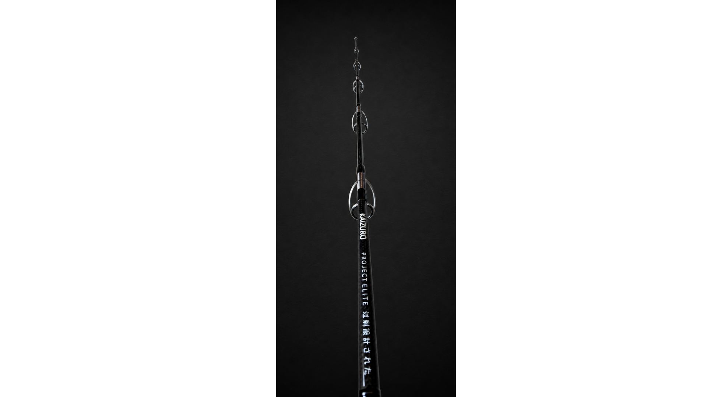
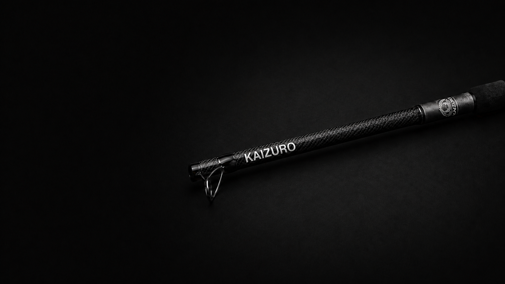
Project Elite 01
The first physical expression of the KAIZURO philosophy.
Designed for high-output topwater casting, serious offshore load and the violent opening phase of a fight.
Designed to cast. Built to load. Engineered to recover.Design Principles
Blank architecture, guide placement, grip geometry and reel retention influence one another. ASSAULT is being developed as one connected mechanical system.
Every part must justify its weight, position and purpose under pressure.
Static load, destructive testing and offshore feedback guide decisions.
Prototype learning is carried forward before production is opened.
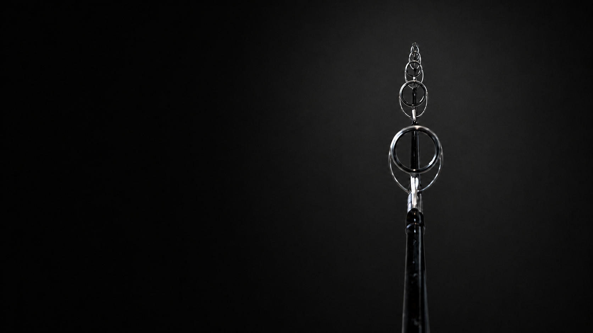
Guide Architecture
Guide selection is not a finishing decision. Frame geometry, ring size, spacing and wrap construction influence line flow, load transfer and finished weight.
The path of the braid. The path of the load. One system.01 · Frame
Heavy offshore guides must withstand impact, repeated loading and lateral force without unnecessary bulk.
01 / 03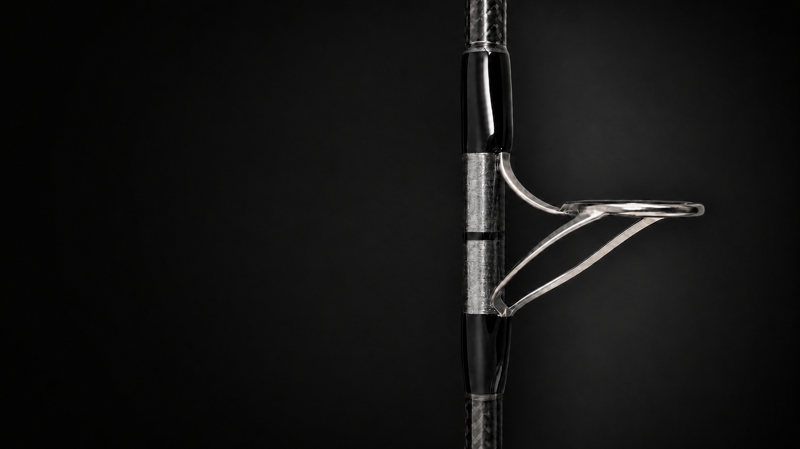
Heavy offshore guides must withstand impact, repeated loading and lateral force without unnecessary weight in the working section.
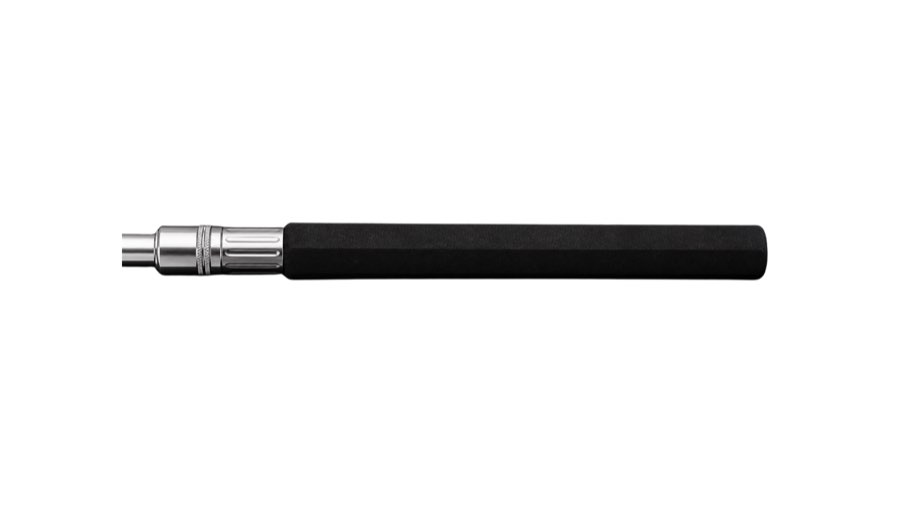
Wrap length, thread build, resin control and preparation beneath the foot manage security, stiffness and avoidable mass.
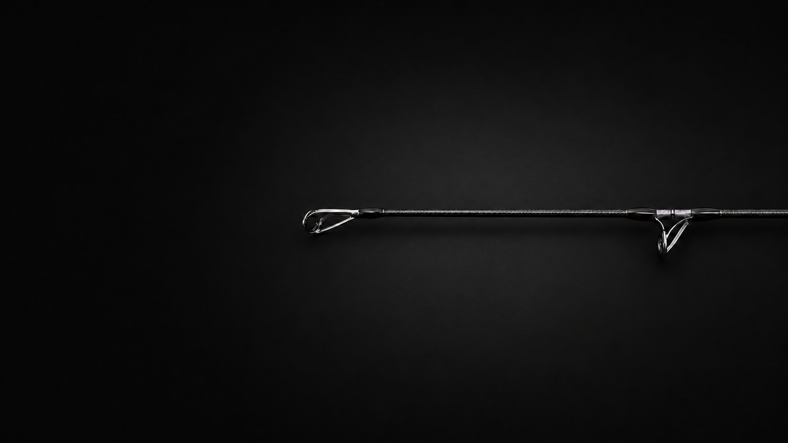
Guide size and progression gradually control broad coils of braid while supporting the blank under load.
Grip Geometry
The upper grip is not a conventional round tube enlarged for appearance. Its elongated rounded-pentagonal profile supports leverage, hand indexing and resistance to unwanted rotation under heavy load.
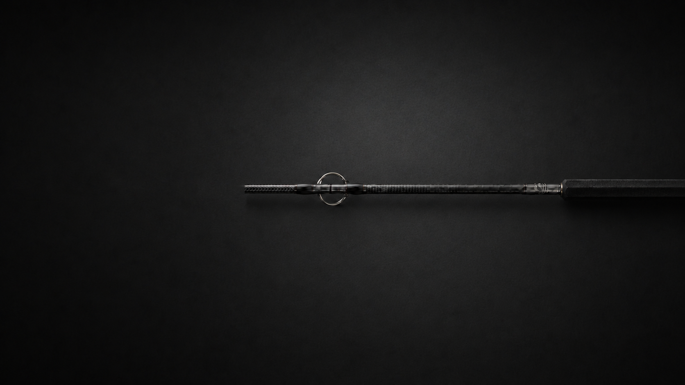
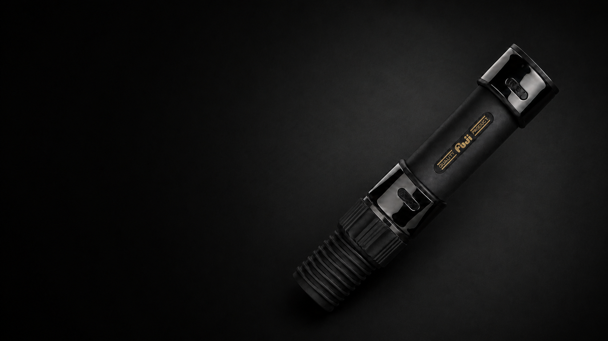
Reel Interface
The reel seat is where rod, reel and angler become one load-bearing system. ASSAULT uses a heavy-duty Fuji DPS configuration selected for secure reel retention, offshore reliability and compatibility with large PE6-8 spinning reels.
Once installed, the reel foot occupies the seat opening and the principal Fuji branding is positioned on the underside.
Fuji DPS component shown before installation.Physical Validation
KAIZURO is being developed through physical prototypes, controlled loading and documented revision. The purpose is not to promote one maximum number. It is to understand how the blank, components and finished rod behave as one system.
How the rod carries load matters as much as how much load it carries.
Destructive strength, static-load testing and recommended fishing drag are different measurements. Final working-load guidance will follow completed prototype validation.The Road to Production
The first prototype proved the foundation of ASSAULT. It also exposed what needed to improve. That is the purpose of a prototype.
Set the target: PE6-8 offshore casting performance focused on strength, recovery and control.
Produce the first physical blank and finished prototype.
Perform static testing, destructive blank testing and structural review.
Identify opportunities in weight, recovery, guide construction and grip geometry.
Create the next prototype around evidence rather than protecting the first design.
Complete component, load, recovery and real-world testing.
Release the first Founder allocation only after the design is ready.
The First Production Allocation
Founder 100 is the first production allocation in KAIZURO history. Each Founder becomes part of the transition from prototype to production and part of the group that proves KAIZURO can exist on its own terms.
This is not a discounted preorder designed to generate volume. It is a limited ownership release built around traceability, participation and long-term connection to the brand.
Secure your Founder allocationFounder 100 colourway
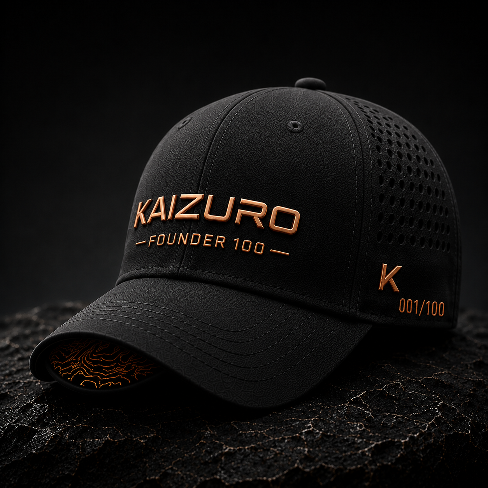
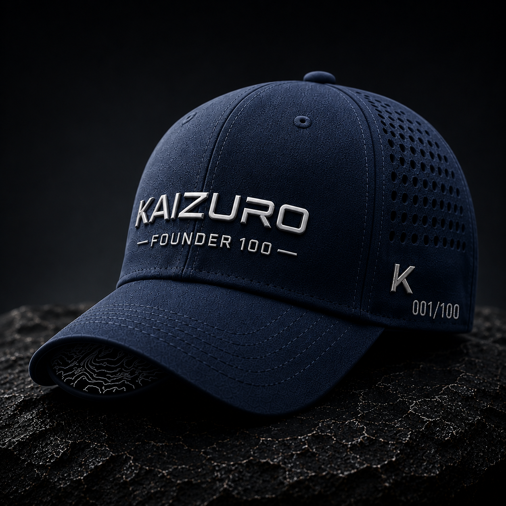
Offshore pack concept

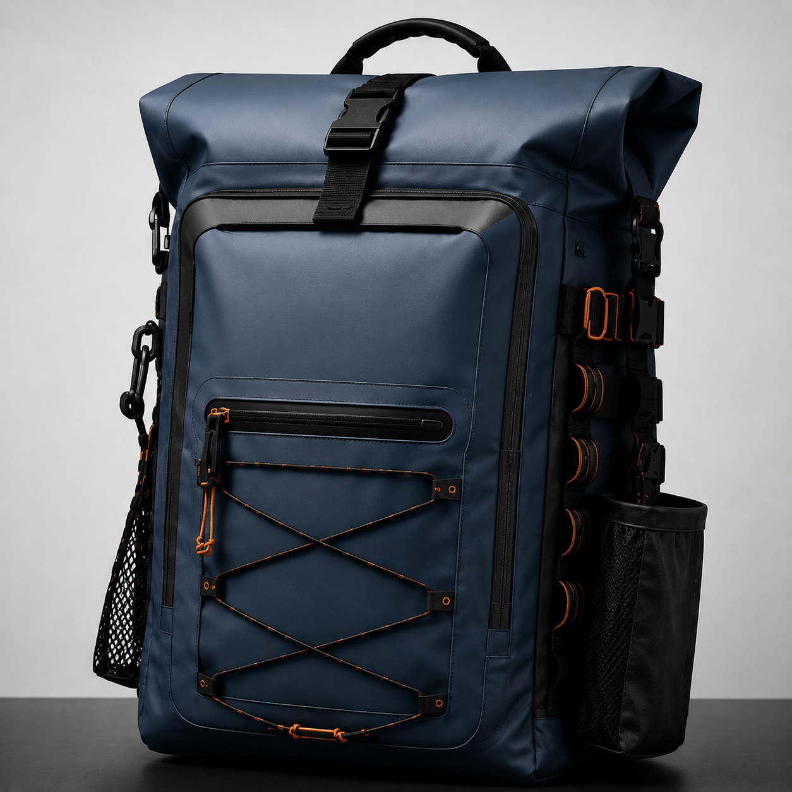
Included with Founder 100
A complete ownership package included with every limited Founder allocation.
Founder Delivery
Defined milestones connect every Founder to the transition from validated prototype to finished ownership.
Your approved Founder position is reserved.
Final component, load and real-world testing is completed.
Founder rods enter controlled first-run production.
Inspection, registration and Founder pack preparation.
Your numbered rod and ownership package are dispatched.
Commercial Terms
It secures one of the first 100 numbered ASSAULT production allocations and the associated Founder ownership package.
Production begins only after final component, load, recovery and real-world validation is complete and the first-run specification is locked.
The complete Founder payment and refund conditions will be defined before allocation opens and will not be hidden in general website terms.
Founder members receive direct validation, manufacturing and delivery updates before wider public release.
A numbered Founder rod, selected cap and offshore pack colourway, Founder certificate and registered digital rod passport.
Final warranty coverage, delivery costs and transfer conditions will be published clearly before payment is accepted.
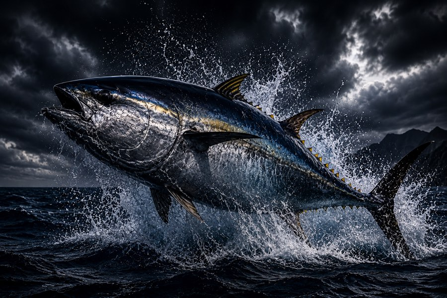
HALO PE10-12
HALO is the future KAIZURO chapter: a heavier PE10-12 platform for giant GT, very large tuna and expedition pressure. The same philosophy, carried further.
Follow HALO developmentFollow the build
Prototype results. Production milestones. Founder availability. HALO development. No filler. Only meaningful KAIZURO updates.
You can leave at any time. Your details will not be sold or shared.